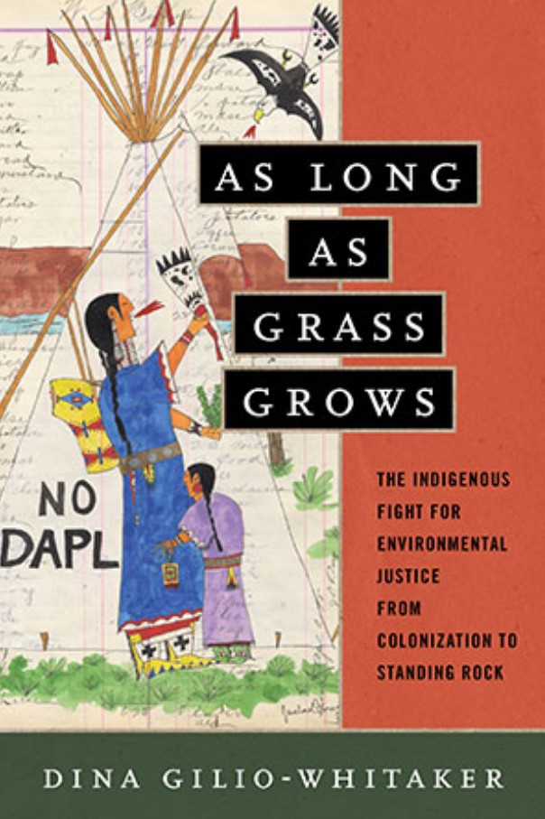

2 Co-Management
Co-management is a term that is appearing increasingly in both the literature and policy around coastal governance on the Pacific Coast. It is more widely used in Canada, where there are more examples of formal co-management agreements around fisheries and other coastal resources compared to the United States. Co-management often involves the formalization of a nation-to-nation or government-to-government agreement outlined in the context of treaties and settler state policy. Strengthening nation-to-nation relationships has been stressed as a priority for the Biden administration (White House Fact Sheet). This language implies that Native people without federal recognition in the United States are not afforded the same opportunities to engage in policy and management decisions. However, this is complicated by recent developments including the proposed designation of the Chumash Heritage National Marine Sanctuary, which is overseen by the federal government and was initially proposed by an unrecognized Chumash group.
2.0.1 Definitions
“The vision of tribes, the California Fish and Game Commission, and the California Department of Fish and Wildlife is to engage in a collaborative effort between sovereigns to jointly achieve and implement mutually agreed upon and compatible governance and management objectives to ensure the health and sustainable use of fish and wildlife.”
– California Fish and Game Commission, 2020
Since California is my state of residence, I have adapted and expanded this definition to outline what I feel is a more inclusive understanding of co-management that is applicable throughout the Pacific Coast:
Co-management is the embodiment of a consensual and collaborative relationship between Indigenous Peoples and settler state governments to share responsibility for the stewardship of coastal lands, waters, and wildlife. This stewardship recognizes the value that both Indigenous and Western ways of knowing hold and provides opportunity for Indigenous people to reclaim ancestral practices and authority to guide how humans interact with non-human communities.
It is important to note that co-management on the ground – or rather, in the water – looks quite different from place to place. My (partial) definition is aspirational in the sense that Indigenous People are not often granted real decision-making power or engaged in relationships rooted in consent. The following cases help to illuminate the complexity in current conservations around co-management.
2.1 Deconstructing Management Regimes
Co-management can only be understood in the context of ongoing, intentional exclusion of Indigenous perspectives in existing frameworks of conservation and management. Co-management is one step towards rectifying this problem, with increasing acknowledgment that Indigenous people are often the first to experience negative outcomes from extractive resource management and climate change. The following selection highlights how this conversation is shifting to acknowledge, and sometimes incorporate, Indigenous ways of knowing.
Lara Jacobs et al. Parks Stewardship Forum 38.2. 2022.
Indigenous Knowledge has been undervalued and excluded from coastal and marine conservation for generations. In this paper, the authors note that existing systems were born of a colonial campaign explicitly designed to disenfranchise Indigenous People. Resource management was, and largely still is, centered around an extractive mindset that viewed humans as separate from nature. This is embodied in the establishment of parks and reserves that restricted the ability of Indigenous People to exercise their ancestral stewardship practices, some of which are codified in treaty rights. This paper proposes an alternative framework, one that integrates Indigenous understandings and knowledge with principles of Western science. Referred to as “Two-Eyed Seeing,” this repositioning of conservation efforts through an Indigenous lens is described through the “Seven R’s:”
Figure 1.1: The Seven R’s (Jacobs et al., 2022).
“Two-Eyed Seeing”: An Indigenous framework to transform fisheries research and management
Andrea Reid et al. Fish and Fisheries 22.2. 2020.
This paper further expands on the notion of Two-Eyed Seeing, integrating experience from Canadian fisheries management. The authors stress the danger in merely “assimilating” Indigenous knowledge into Western systems. Instead, they stress Two-Eye Seeing as a means to position both Indigenous and Western ways of knowing on even ground. The methodology emphasizes the strength in being able to view issues from both angles, acknowledging the important role Indigenous scientists play on advisory councils and management bodies.
“We argue that Two-Eyed Seeing provides a pathway to a plural coexistence, where time-tested Indigenous knowledge systems can be paired with, not subsumed by, Western scientific insights for an equitable and sustainable future.”
– Reid et al., 2020
Figure 1.2: “Indigenous conceptual frameworks for promoting knowledge coexistence: (i) the”Two Row Wampum” or Kaswentha in Haudenosaunee; (ii) the “Two Ways” or Ganma in Yolngu; (iii) the “Double-Canoe” or Waka-Taurua in Māori; and (iv) “Two-Eyed Seeing” or Etuaptmumk in Mi’kmaw. Refer to main text (section 3) for full descriptions of each framework (Subsections 1–4, respectively). Artwork by Nicole Burton” (Reid et al., 2020).
Dina Gilio-Whitaker. Beacon Press. 2019.

This book endeavors to reimagine contemporary environmental justice movements to account for the unique aspects of Indigenous experiences of colonization and genocide. This process, called “Indigenizing” by Gilio-Whitaker, goes beyond philosophical conversations and looks closely at how different grassroots movements and processes in environmental management work for (or against) self-determination and sovereignty for Indigenous people. It emphasizes the often overlooked role Indigenous people play in raising environmental consciousness, especially in California. It also examines the ways in which entities such as non-profits and other settler organizations can both help and hinder Indigenous self-determination. The book emphasizes the need for stronger coalitions that respect the power of Indigenous resistance to reimagine our relationships with the natural world. XXX
2.2 Co-management Guidance and Cases
Across the Pacific Coast, Indigenous people are reclaiming their ancestral rights to steward their lands and waters. While there is a clear concentration of these government-to-government agreements in Alaska, Canada, and the Pacific Northwest, there is a growing movement towards greater Native leadership in coastal management in California as well. This section highlights some of these cases.
Best Practices for Tribal Engagement in Marine Protected Area Stewardship
North Coast Native Protectors, RAM Consulting, Humboldt County MPA Collaborative, Del Norte County MPA Collaborative, MPA Collaborative Network. 2022.
This Native-led guide seeks to strengthen the engagement process and work towards healthier collaborations in the management of MPAs in California. The following figure highlights the key recommendations.
Figure 1.3: Pathway to collaborative stewardship (NCNP, 2022).
This document includes multiple sections of additional resources, some of which are included in this list, for further exploration of best practices in collaborative stewardship. It also includes an overview of the history of MPA management in California. It found that no indigenous People were included in the Science Advisory Team that guided the MLPA process. This is also further highlighted in an article titled A Clash of Cultures: The Struggle of Native Americans to Participate in Traditional Ecological Knowledge and Western Science Under California’s Marine Life Protection Act (Maloney and Corbett, 2021).
Guidance and Responsibilities for Effective Tribal Consultation, Communication, and Engagement
West Coast Ocean Alliance. 2020.
Summary of guidance: “In 2019, the Tribal Caucus of the West Coast Ocean Alliance (WCOA) developed this document to serve as a guide to federal and state agencies seeking to engage with Tribal Governments on ocean and coastal issues on the West Coast. It is a Tribally developed document intended to complement individual Tribes’ consultation policies by providing background, context, best practices, and resources for working with Tribal Governments. When working with Tribes in any context, it is essential that agencies build relationships with their Tribal counterparts and learn about the policies and protocols of specific Tribal Governments; this guide cannot substitute for the knowledge and connections gained from such efforts.”
The guide, developed in partnership and with the approval of multiple Tribal representatives, outlines the steps towards effective collaboration:
Figure 1.4: Key recommendations for cross-cultural collaboration (WCOA, 2020).
The document is broken into sections that provide a review of existing federal and state-by-state “consultation policies.” It stresses that the principle of establishing free, prior, and informed consent (FPIC) as outlined in the 2007 United Nations Declaration on the Rights of Indigenous Peoples (UNDRIP) has not been formalized in U.S. law. The document provides helpful definitions of key terms and laws that make up the foundation of current co-management agreements.
2.2.1 California Cases
California Agencies have expressed explicit interest in pursuing co-management agreements with Native governments and organizations. The California Fish and Game Commission has adopted the following “Co-management Vision Statement”:
“The vision of tribes, the California Fish and Game Commission, and the California Department of Fish and Wildlife is to engage in a collaborative effort between sovereigns to jointly achieve and implement mutually agreed upon and compatible governance and management objectives to ensure the health and sustainable use of fish and wildlife.”
– California Fish and Game Commission, 2020
A key element of this definition is the word “sovereigns”, which implies the exclusion of unrecognized tribes. This does not reflect any legislative requirement in fisheries or protected area policy to grant decision-making power to Native people. California statute, as it currently stands, only requires “meaningful consultation with California Native American tribes” on a range of actions (California NAHC, 2023).
Curtis Berkey and Scott Williams. American Indian Law Review 43.2. 2018.
This paper, written by non-Native authors, reviews the process of the implementation of the Marine Life Protection Act (MLPA) in California and the network of marine protected areas (MPAs) that it spawned. After initial exclusion from the planning process, several Tribes advocated for and secured specific allowances for Tribal harvest (or “Tribal Take”) of marine resources in certain protected areas. More importantly, the advocacy of the Tribes laid the foundation for a more robust government-to-government relationship and opened the door for future co-management opportunities. The key outcome from this process was a recognition on the part of the state that Tribes represent a distinct and specific group that should not be lumped together with non-Native interests or “stakeholders.” The 2016 MPA Master Plan also formally recognized that “Tribal Knowledge (TK)” is a valuable aspect of environmental management and the future of marine resources in the state.
MPA Network Decadal Management Review: Appendix C – Tribal Summary
DMR Tribal Steering Committee. 2022.
Co-management is being defined by Native people in California themselves through different aspects of the MPA Network Decadal Management Review (DMR). This report represents ten years of assessment of the 124-site network and includes a separate Appendix produced by Tribal representatives. It states:
“Native Tribes are the original stewards of California’s coast and ocean despite a history of genocide, forced relocation, and systematic oppression. Tribes rely on the coast and ocean for food, medicine, ceremony, and other customary and beneficial uses, responsibly using natural and cultural resources in accordance with traditional practice. Tribes have never ceded their inherent rights to harvest and gather from, or hold religious ceremonies in, the marine environment. Nor have they surrendered their obligation to manage marine resources sustainably in support of a resilient ocean for all beings.”
It specifically addresses the absence of Native contribution to the MLPA process (highlighted in the previous resource) and provides a more updated picture on the current state of Tribal engagement in coastal protection in California. This was a key conversation at the DMR review meetings held in March 2023. The following are key recommendations from a synthesis of public comments provided by Native people. They closely reflect the language in the WCOA guidance above.
Figure 1.5: Recommendations from Native participants in the DMR process (DMR Tribal Appendix, 2022).
Tolowa Dee-ni’ Nation, Intertribal Sinkyone Wilderness Council, Cher-Ae Heights Indian Community of the Trinidad Rancheria, Wiyot Tribe. 2017
This document, partially an outcome of consultation through the MLPA Initiative “applies Tribal/Indigenous Traditional Knowledge (T/ITK) to inform the baseline characterization for State Marine Protected Area (MPA) monitoring.” It stresses the unique value of T/ITK, especially for establishing historically relevant baselines for coastal ecosystems and identifying threats. A selection of key policy recommendations are paraphrased as follows:
Figure 1.6: Policy recommendations for coastal management process (North Coast Baseline, 2017).
Yurok Tribal Fisheries Program
Yurok Tribe. 2023.
As the largest federally recognized tribe in California, the Yurok run a comprehensive fisheries program designed to monitor and manage the fisheries in the Klamath River watershed. This includes partnerships with different state and federal agencies, especially around issues of shared jurisdiction including recently finalized decisions to remove dams to restore fish runs on the river. The final approval for the removal of four dams was issued in November 2022. The decommissioning of the dams is accompanied by $5.8 million in federal funding for restoration projects led by Tribes in the region. This includes both the Yurok and Karuk who were active participants throughout the 15-year planning process. Dam removal and restoration is being organized under the Klamath River Renewal Corporation, a conglomerate of representatives for Tribal, State, and NGO interests.
Proposed Designation of Chumash Heritage National Marine Sanctuary
NOAA National Marine Sanctuaries. 2023.
Figure 1.7: Proposed area for Chumash Heritage National Marine Sanctuary (NOAA, 2023).
The Chumash Heritage National Marine Sanctuary (CHNMS), initially proposed by members of the unrecognized Northern Chumash Tribal Council, seeks to secure sanctuary status for a large stretch of the Central Coast. Tribes and Bands of both Chumash and Salinan descent have issued comments about the designation process, with most expressing support under the condition that Native people are considered co-managers of this area. The Santa Ynez Chumash, the only federally recognized tribe in the region, has pointed to co-management agreements established in other sanctuaries like the Olympic Coast National Marine Sanctuary as potential models in comments submitted to NOAA.
2.2.2 Other U.S. West Coast Cases
Intergovernmental Policy Committee - Olympic Coast National Marine Sanctuary
NOAA National Marine Sanctuaries. 2023.
Referenced in the proceedings around the proposed CHNMS, the Olympic National Marine Sanctuary (OCNMS) is an oft-cited case of effective Tribal engagement in marine management. Since 2007, the sanctuary governance has included an Intergovernmental Policy Committee (IPC) including the four “Coast Treaty Tribes” (Hoh, Makah, Quileute, and Quinault), the State of Washington, and NOAA. The IPC recognizes the original fishing rights and co-management responsibilities of Native people on the Olympic Coast, whose traditional harvest territory encompasses the sanctuary.
The sanctuary is undergoing a review of their management plan and is currently receiving public comments. The 2008-2019 OCNMS Conditions Report recognized that treaty-protected fishing grounds overlap with the sanctuary. As such, the IPC works to enhance “collaborative research” partnerships that achieve the following.
Figure 1.8: Priorities of the Intergovernmental Policy Council (NOAA, 2023).
Tribes - Pacific Fishery Management Council
PFMC. 2023.
Tribes in Washington, Oregon, Idaho, and California work together with the Pacific Fishery Management Council (PFMC) to jointly manage key fisheries, especially around salmon. The council recognizes and upholds the rights of Tribes with established treaties to fish in “usual and accustomed (U&A) areas.” In these situations, Tribes are entitled to half of the surplus stocks in those areas. While these arrangements are more common in Oregon and Washington, this applies to the Yurok and Hoopa Valley Tribes in the Klamath River basin in California. There is a permanent Tribal voting seat on the PFMC board staffed by a member of any federally recognized tribe in the region. The Sustaining America’s Fisheries for the Future Act, the name for the Magnuson-Stevens Act Reauthorization that is currently under consideration by the House, would add a similar requirement for the Northern Pacific Fishery Management Council in Alaska. The following figure provides a state-by-state view of the PFMC management process and related co-management agreements.
| Agreement | States | Description |
|---|---|---|
| North of Falcon | WA | Sets salmon limits for inland areas (Puget Sound, Willapa Bay, Grays Harbor, and state rivers) |
| Shellfish Agreement | WA | From U.S. v Washington: reaffirmed Tribal right to equal harvest of shellfish including crabs |
| Colombia River-Inter Tribal Fish Commission | OR, WA, ID | From U.S v Oregon: co-management of salmon between states, four treaty Tribes, and other Native groups |
| Northwest Indian Fisheries Commission | WA | From Boldt Decision: coalition of 20 treaty Tribes in Western Washington recognized them as natural resources co-managers with the State of Washington with an equal share of the harvestable number of salmon returning annually. |
| Klamath River Intertribal Fish and Water Commission | OR, CA | Established in 1995 to manage the Klamath River salmon and monitor restoration work in the basin. The commission includes the Hoopa, Yurok, Karuk, and Klamath Tribes. |
At present, the Coast Treaty Tribes in Washington are the only group with designated harvest rights off-shore under the Treaties of Neah Bay and Olympia. The Washington Department of Fish and Wildlife maintains a Tribal Fishing webpage which includes several educational resources.
Co-management of Marine Mammals in Alaska: A Case Study-Based Review
Marine Mammal Commission. 2019.
The federal government through the Marine Mammal Protection Act allows for separate agreements with Alaskan Native Organizations. This allows federal agencies to establish shared management goals that recognize cultural uses of marine mammals. Tribal members and organizations can establish agreements to actively monitor and set limits for the harvest of marine mammals for cultural and subsistence purposes. There are nine individual agreements that can be seen on the NOAA website. The report defines co-management in this context:
“A partnership based on trust and respect, established between an Alaska Native Organization, as defined by the MMPA, and either NMFS or FWS, with shared responsibilities for the conservation of marine mammals and their sustainable subsistence use by Alaska Natives.”
– Malek et al., 2019
This process has been criticized by Native Alaskans despite several attempts to review and improve the process. This report was conducted in efforts to improve government-to-government coordination and produced the following recommendations and findings.
Figure 1.9: Findings from Alaska Co-management Case Study (Malek et al., 2019).
A key finding from this process was that subsistence activities are imperiled by climate change and Native Alaskans are a vital frontline information source on the health of different mammal populations.
2.2.3 Canada Cases
While the United States has taken a state-by-state approach, Canada has defined and integrated co-management responsibilities at the national level. The following presents a (very limited) selection of resources exploring co-management on the West Coast of Canada.
The Compendium of Indigenous Socio-economic Best Practises in Fisheries and Oceans Sectors
National Indigenous Fisheries Institute. 2022.
This resource library documents various co-management agreements and outlines the many partnerships between First Nations and the Canadian government with respect to fisheries and aquaculture. This includes an implementation plan for the landmark agreement to require aquaculture companies to obtain the consent of First Nations to operate in their waters. Concern for the transmission of diseases and parasites from farming operations to wild salmon populations has led to the decommissioning of a majority of the remaining open water salmon farms in British Columbia. The transitioning of this industry is grounded in consensus-based negotiations and includes permit buybacks by the Canadian government. Indigenous leadership in monitoring and evaluating salmon farms to map and measure risks has also helped establish a relationship between First Nations and aquaculture companies. It has also increased coordination between different First Nations governments in British Columbia.
Conservation, Co-Management, and Power-Balancing in Haida Gwaii
Erin Shields. UCLA Law Review. 2020
This paper provides a review of the reconciliation process between the Canadian government and the Haida First Nation. The basis of reconciliation has centered around the upholding of Aboriginal title to lands and waters in Haida territory. The paper recognizes the need to rectify power imbalance between Indigenous governments and settler governments in order to facilitate meaningful co-management. In the case of Haida Gwaii, Indigenous activism and resistance to resource extraction by settler groups led to the establishment of the Gwaii Haanas Agreement in 1993. This agreement established government-to-government systems to facilitate co-management of resources in the islands, including an extensive protected area network. This agreement was extended to include marine areas in 2010. More recently, the 2018 Gwaii Haanas Gina ’Waadluxan KilGuhlGa Land-Sea-People Management Plan is a first-of-its-kind integrated co-management plan spanning both terrestrial and marine ecosystems.
Figure 1.10: Guiding principles from the Gwaii Haanas Gina ’Waadluxan KilGuhlGa Land-Sea-People Management Plan (Archipelago Management Board, 2018).